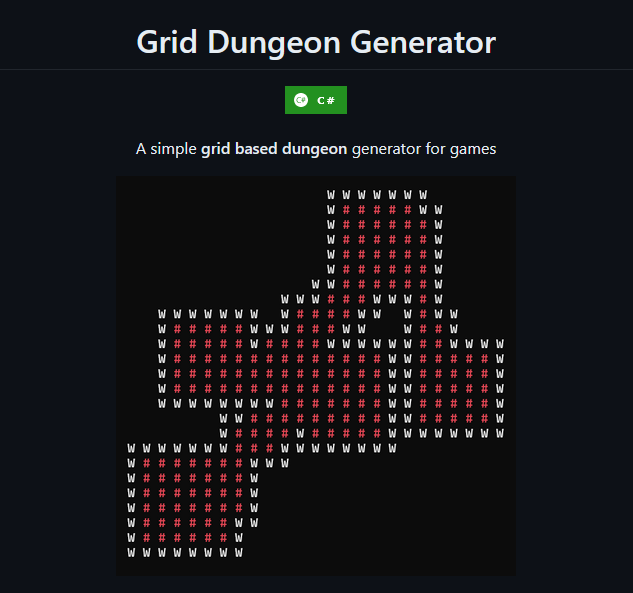

After a couple of month, here is a new updated related to map, inventory and UI.
Map generation
I implemented a simple grid map generator to use in Mech-geon, you can check the project here
Inventory
The user will be able to store items in a inventory and equip those items if the item is compatible with the slot that the player is trying to equip. There are seven equippable slots: Head, Chest, Back, Right Hand, Left Hand, Right Foot and Left Foot (could be more in the future). The idea is that each item can be equipped in a sort of compatible slots, for example: you can equip a weapon in your hands but not in your head.
Chests
The player also can interact with external inventories like chests and loot levels or store his items in the lobby (TBD).
Save and Load
Now the player is able to save his progress and load it whenever he wants to continue the adventure.
This is a brief video of the current state of Mech-Geon